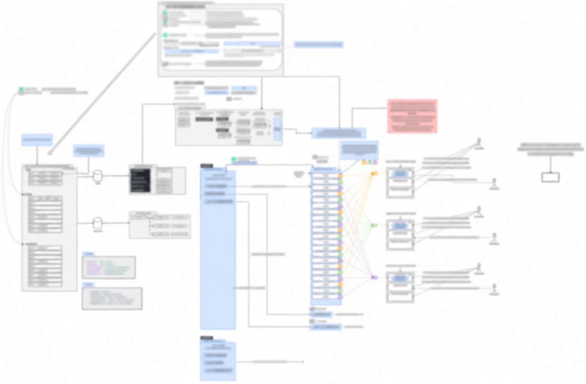
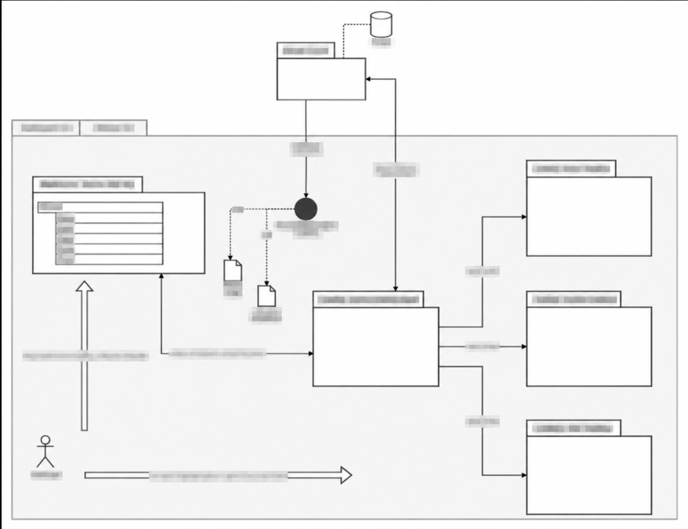
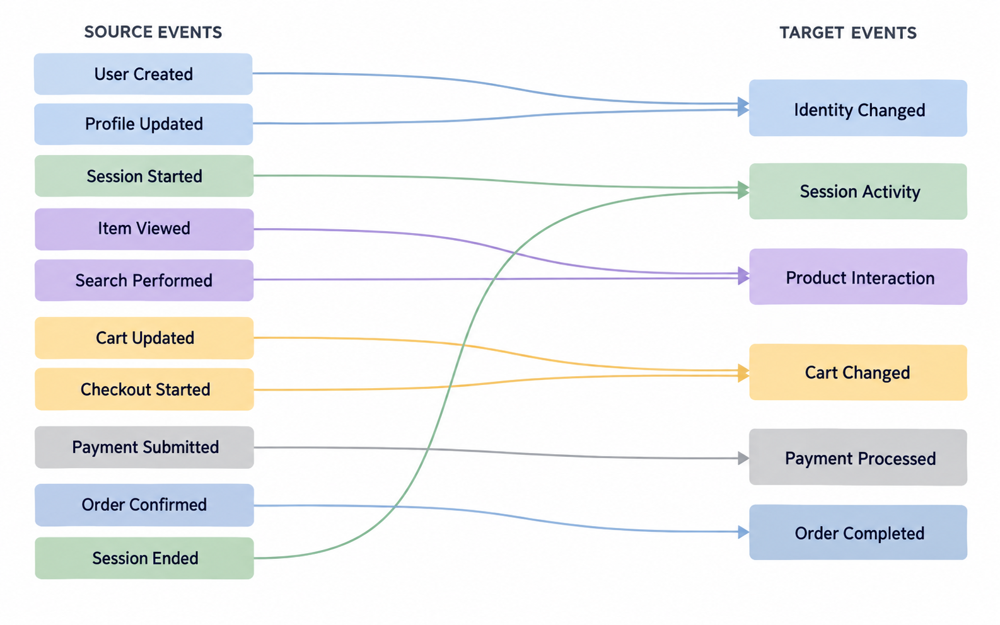
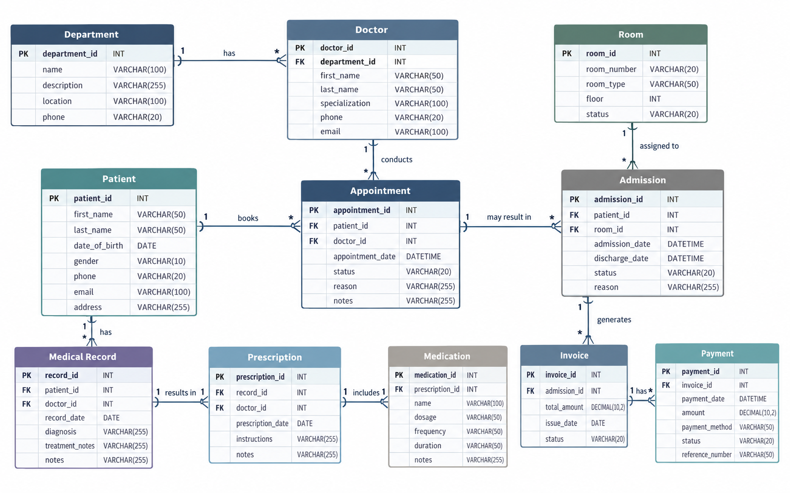
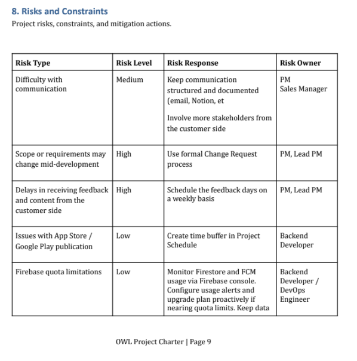
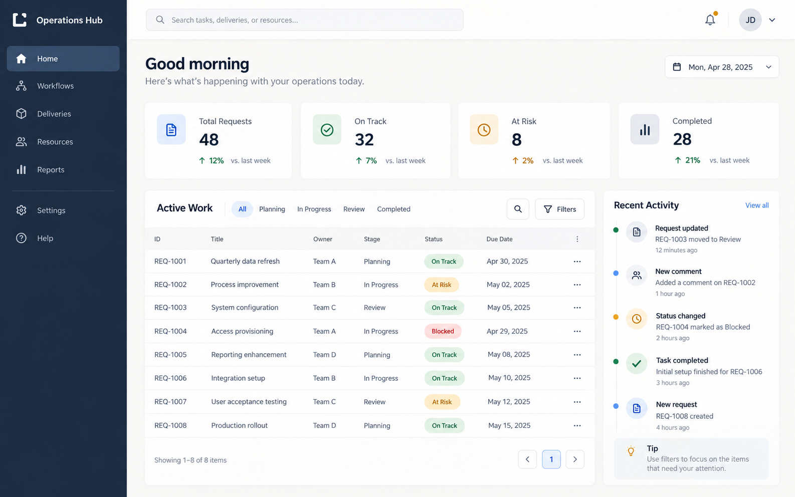

AI-ENABLED SDLC
Confluence + GenAI
Writing and improving specifications, automating documentation workflows and accelerating analysis and onboarding for AI-driven software development lifecycles.
Desired roles
Functional Architect | Product Owner | Business Analyst | Systems Analyst | Solution Manager | Project Manager
I use Generative AI as a practical analysis and delivery accelerator — combining human judgment, structured context and AI agents to explore complex systems, improve specifications and communicate decisions.
ANALYSIS · SDLC · ARCHITECTURE · DATA · AUTOMATIONAI-ENABLED SDLC
Writing and improving specifications, automating documentation workflows and accelerating analysis and onboarding for AI-driven software development lifecycles.
DELIVERY OPERATIONS
Creating, refining and analyzing tickets with AI; improving user stories, acceptance criteria, backlog quality, traceability and team onboarding.
DESIGN & SPECIFICATIONS
Using Figma for functional prototyping and as an executable specification, with MCP connectors enabling Codex and Claude Code agents to work from shared design context.
INTERFACES & DEPENDENCIES
Applying AI-assisted deep research to integration documents, APIs, interfaces, data flows and dependencies to identify gaps, risks and business impacts.
MODERNIZATION
Using AI for code and specification research to reduce the legacy ratio, recover system knowledge and build the functional and technical models required for modernization.
COMPLEX SYSTEMS
Processing large solution contexts and creating functional, domain and dependency models while analyzing risks, constraints, regulatory requirements and compliance impacts.
DATA MODELS
Accelerating onboarding to data models and database procedures, generating and reviewing SQL queries, exploring schemas and supporting data analysis.
INSIGHTS & VISUALIZATION
Using AI to strengthen analytical work in Excel, Tableau, Power BI and other visualization tools — from data preparation and exploration to clear decision-ready insights.
SIGNALS & PATTERNS
Applying AI to signal processing research, pattern recognition and concept development, shaping findings into feasible product and engineering directions.
SOLUTION DESIGN
Continuously supporting and evolving systems architecture in line with business concepts, product strategy, integrations, constraints and delivery priorities.
STAKEHOLDER ALIGNMENT
Using GenAI tools to explain complex systems, solution options, risks and recommendations through clear demos, visual models and stakeholder-focused presentations.
TROUBLESHOOTING & OPERATIONS
Using AI for deep log analysis, anomaly and pattern detection, root-cause investigation and evidence-based problem solving across applications, integrations and distributed systems.
Synthetic, privacy-safe examples of models and specifications produced through structured human–AI collaboration.





